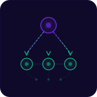
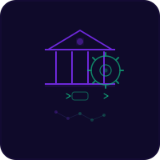
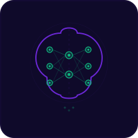

Especialista em Gestão Pública & Transferências da União com IA aplicada
Conhecer sistemasEspecialista em Processos, Sistemas e Gestão Pública com 8 anos de experiência na Administração Pública Federal.
Domínio em transferências e parcerias da União — convênios, TED, emendas parlamentares, contratos de repasse, Termo de Fomento e Termo de Colaboração (MROSC - Lei 13.019/2014). Atuou em órgãos como INCRA, MAPA e MDA, chegando a Chefe de Divisão de Prestação de Contas e Coordenadora de Infraestrutura Substituta.
Criadora do SIATUP e do PIL — sistemas inteligentes para gestão pública e acompanhamento legislativo. Atua com IA aplicada, criando soluções que automatizam processos governamentais.
Ex-aluna AIOX Fundamentals — Orquestradora de agentes de IA.
Soluções inteligentes para gestão pública e acompanhamento legislativo
Plataforma de IA que automatiza a análise completa do ciclo de vida dos instrumentos de transferências da União — da celebração à prestação de contas, evitando possível Tomada de Contas Especial.
Disponível para demonstração mediante agendamento e assinatura de termo de confidencialidade (NDA).
Reúne, organiza e disponibiliza em tempo real todas as informações sobre a atuação de um parlamentar no Congresso Nacional. Fases processuais, projetos de autoria, relatorias com controle de prazo, comissões, votações nominais e matérias recentes — tudo em um painel unificado com exportação para Excel e PDF.
Disponível para demonstração mediante agendamento e assinatura de termo de confidencialidade (NDA).
Plataforma criada para o Módulo 8 (Execução Orçamentária Geral) do MBA, usada pela turma. Reúne o guia da aula, com exemplos práticos e questões comentadas, e um simulador das etapas da execução da despesa.
CRM personalizado para um escritório de financiamento imobiliário, com agente de IA de pré-atendimento no WhatsApp no estilo do próprio gestor, para eliminar a perda de clientes na fase inicial do atendimento.
Sistema privado, desenvolvido para cliente. Demonstração mediante agendamento.
Convênios, TED, emendas parlamentares, contratos de repasse, MROSC
Análise, mapeamento e otimização de processos governamentais
Implementação de soluções com inteligência artificial para gestão orçamentária
Treinamento em sistemas, processos e ferramentas de gestão pública
Assessoria em monitoramento de proposições e atuação parlamentar
Deploy de sistemas inteligentes para órgãos públicos e gabinetes

Convênios, TED, contratos de repasse, Termo de Fomento, Termo de Colaboração (MROSC), Acordo de Cooperação, Emendas Parlamentares, Transferências Especiais, Fundo a Fundo

Processos e sistemas na Admin. Federal

Inteligência artificial para gestão pública
Dados orçamentários e monitoramento
IESB — Centro Universitário
Academia Lendária
Claude Code, AIOX Framework, agentes de IA, Git/GitHub, PRD, Deploy Vercel/Supabase, Workflows
Corel Draw, Photoshop e Illustrator
SICONV para Convenentes 1, 2 e 3 – Transferências Discricionárias da União – Termo de Execução Descentralizada
Plano de Dados Abertos – Gestão de Processos – Acesso à Informação – Licitações e Contratos
Doutor Excel, Karen-Abecia – Informática Avançada (Pacote Office)
Série de cursos presenciais em formato de imersão sobre os instrumentos de transferência da União, com casos reais e o processo completo de análise, do lado do concedente e do lado da organização.
Primeiro curso em preparação: Como Analisar os Passivos, sobre Termo de Fomento e Termo de Colaboração (MROSC), com Painel do Passivo em Power BI entregue ao aluno.
Conhecer a ConectadadosEducação com IA e robótica para crianças K-12. Um ecossistema que integra mesa holográfica, realidade estendida (XR), impressão 3D e IA generativa.
Luciana contribui como parceira estratégica, trazendo experiência em gestão pública e processos governamentais.
Conhecer o projetoDescreva sua dor na gestão pública — a IA interpreta e entrega um briefing para começarmos a construir juntos a solução.
Sistemas, consultoria e IA para gestão pública. Aberta a negociações e novas parcerias.